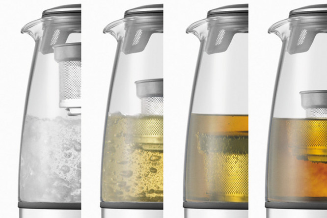
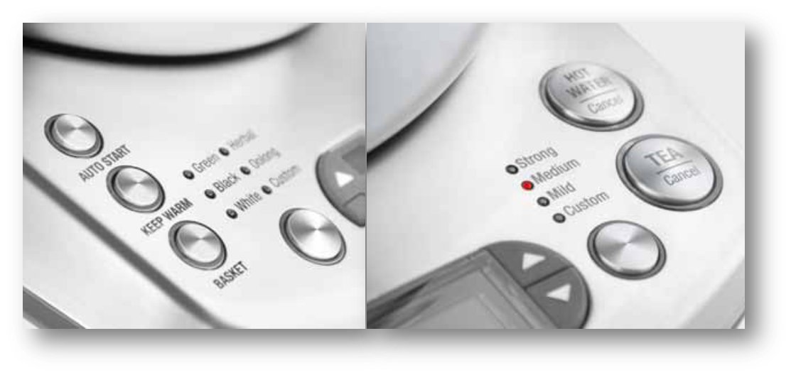
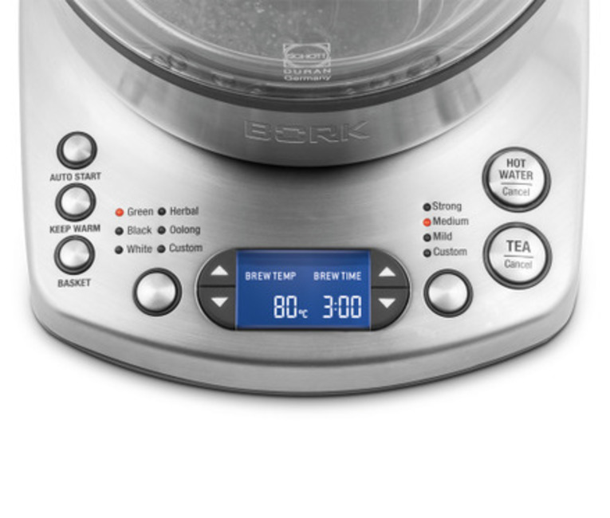
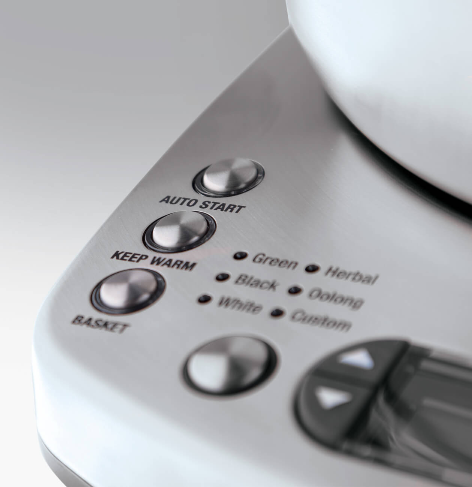
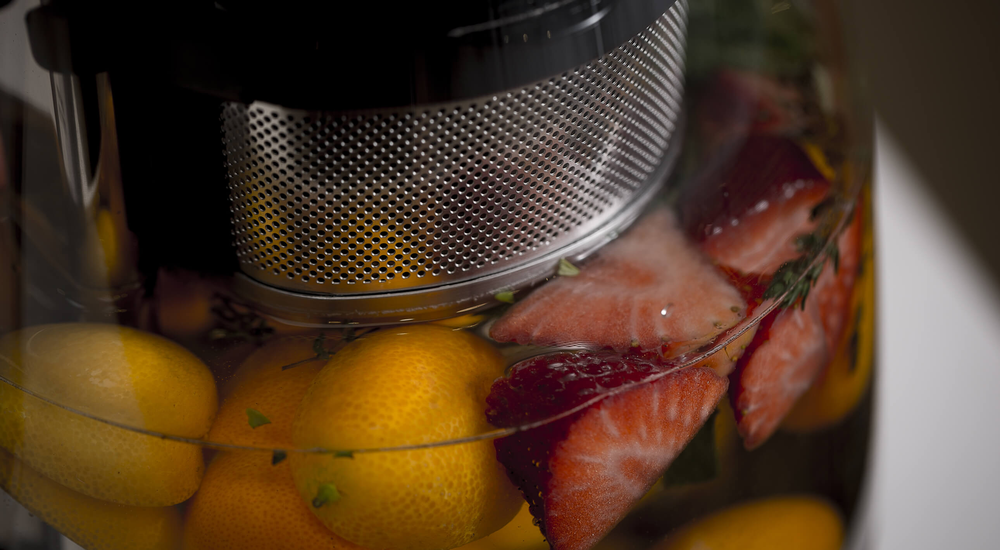
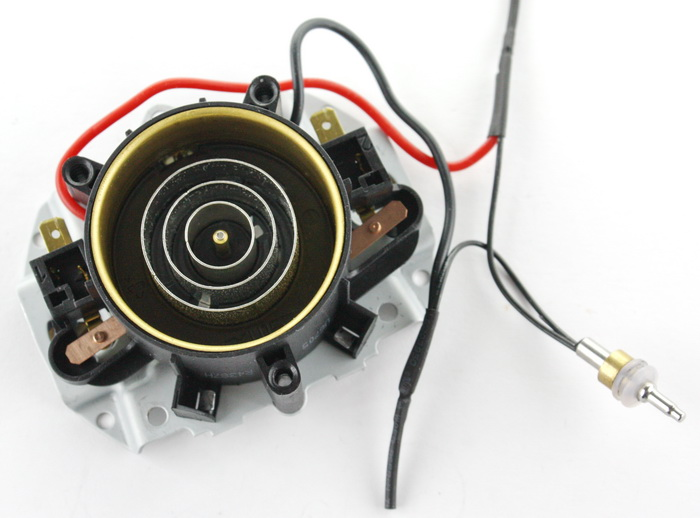
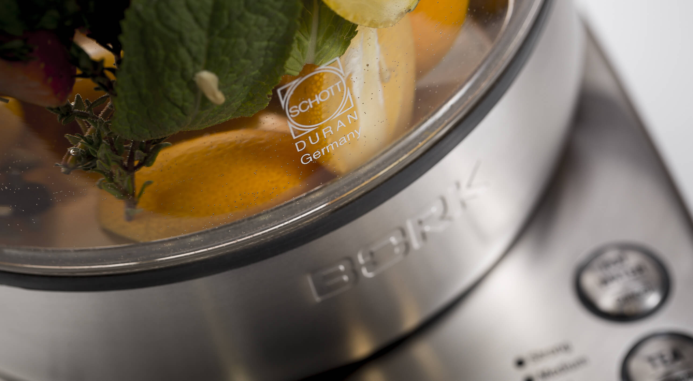

Чайник К810

Возможности чайника позволяют использовать его как для кипячения воды, так и для заваривания чая. Любой чай хорош настолько, насколько он правильно заварен!
Функция быстрого заваривания чая
Автоматический подъем и погружение корзины во время заваривания чая позволяет воде циркулировать, повышая скорость и крепость заваривания. Функцию рекомендуется использовать при количестве воды в чайнике от 0,5 л. до 1,2 л. «Basket Cycle» может значительно увеличить крепость чая.
Настройка температуры и крепости заваривания
Функция управления позволяет устанавливать крепость и температуру заваривания на Ваше усмотрение и предоставляет возможность экспериментировать с любыми сортами чая, добиваясь разных оттенков вкуса. С помощью стрелочек установите необходимую температуру заваривания BREW TEMP в диапазоне 50–100ºС (Для конвертации градусов Цельсия в градусы Фаренгейта одновременно удерживайте в течение 2 секунд кнопки «Тип чая» и «Крепость»), время заваривания BREW TIME до 10 минут и нажмите кнопку TEA/CANCEL.
Индикация температуры и времени заваривания
Электронный датчик температуры обеспечивает контроль нагрева, времени заваривания и температуры воды. Показания датчика отображаются на дисплее в реальном времени, позволяя контролировать процесс заваривания чая и нагрева воды.
Функция отложенного старта
Чайник включается автоматически в удобное для Вас время. Чтобы запрограммировать чайник на включение в удобное для вас время нажмите и удерживайте 2 секунды кнопку AUTO START. С помощью стрелочек введите текущее время CURRENT TIME и время автоматического включения чайника START TIME, максимальное время отложенного старта 24 часа. Выберите желаемый режим работы: кипячение воды HOT WATER/CANCEL или заваривание чая TEA/CANCEL. Функция «Отложенного старта» может быть отключена в любой момент нажатием на кнопку AUTOSTART.
Функция поддержания температуры
Чайник поддерживает температуру в течение часа после выключения. Вы можете включить функцию до, во время или после завершения цикла заваривания чая или нагрева воды, нажав на кнопку KEEP WARM. Поддержание температуры может продолжаться до 60 минут в диапазоне 70-80ºС. Если в течении этого времени чайник снять с базы режим «Keep Warm» отключиться. Функция не будет работать, если температура воды ниже 50 °С.
Функция памяти
По окончании цикла заваривания чая или нагрева воды заданные индивидуальные настройки остаются в памяти чайника, в том числе после отключения чайника от электросети.
Контактная группа Strix
Strix уже давно зарекомендовал себя на рынке - основные преимущества заключаются в следующем:
- Полный набор защитных механизмов, которые обеспечивают максимальную безопасность при использовании чайников. Есть и отключение при перегреве нагревательного элемента, и защита скачков напряжения, а также - отключение, если чайник снимается до закипания.
- Конструкция контактных групп позволяет реализовать вращение чайника на подставке на 360 градусов, чтобы и правша, и левша мог использовать чайник с одинаковым удобством.
- Контактная группа Strix, рассчитана на 3 000 000 закипаний воды в чайнике, что положительно сказывается на сроке службы.
- Максимальная погрешность температур ± 3 ˚ С, такая точность позволяет полностью раскрыть аромат и вкус, каждого из завариваемого чая.
Стеклянный кувшин DURAN SCHOTT
Процесс заваривания чая – завораживающее зрелище. Термостойкий стеклянный корпус предоставляет возможность удобного визуального контроля крепости заваривания и будет по достоинству оценен истинными ценителями чая. Вопреки распространенному мнению, это прочные чайники: разбить корпус — ну, очень трудно. Стекло является экологически чистым материалом и очень правильно передаёт вкус и аромат чая.
Безопасность и надёжность
Абсолютная безопасность гарантирована системой автоматического отключения в случае перегрева или при отсутствии воды, а также системой защиты основания чайника от попадания влаги. Сообщения об ошибках:
«RESET» – мигающая индикация, сообщение о сбое в электропитании. Отключите чайник от электросети и включите повторно через 5 секунд.
«ERROR» – мигающая индикация, сообщение об ошибке в работе. Вытащите вилку из разетки, подождите 5 секунд. Затем снова подсоедините вилку. Если сообщение осталось обратитесь в авторизированный сервисный центр компании BORK.